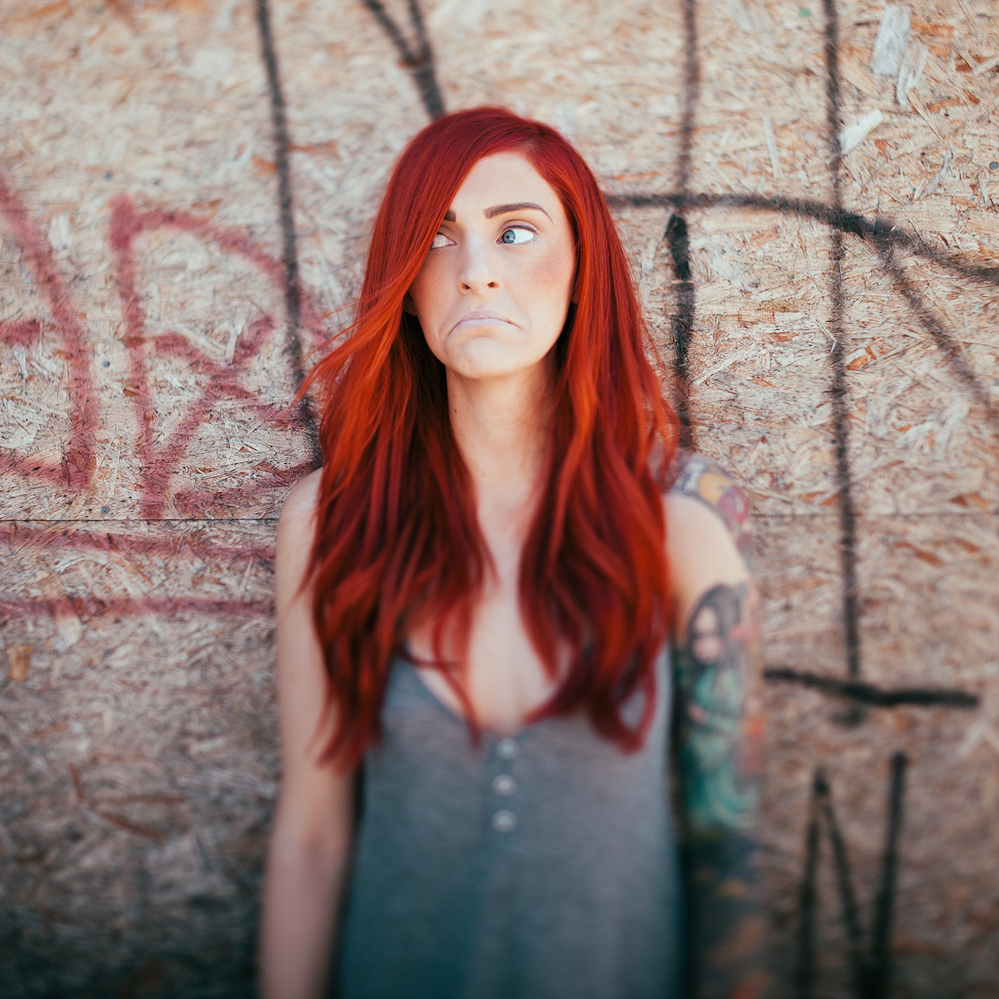

I am a senior at E.W.U in the VCD program. My graduation date is Winter 2015. After graduating with my BA I want to get my MFA. I would love to come back to Eastern to teach design one day. Outside of school, I have pursued many other creative work paths including Silversmithing, photography, and music entertainment production.
